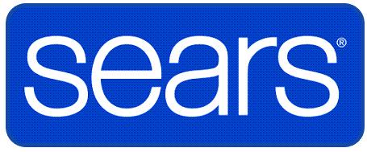

AH™ Approach
AH™ is a sustainable transformation I created... to reflect my experience with strategizing the best approach... to streamline operations, optimize workflows, and align people, processes, and technology.
A
AI and Automation
• Applied digital tools to remove process friction while preserving human decision-making for customer interactions.
• Evaluated opportunities to simplify repetitive information-seeking and status-check activities through technology-enabled self-service.
• Identified opportunities to use automation and intelligent knowledge access to reduce dependence on manual support and improve the speed at which employees could locate answers.
• Evaluated opportunities to simplify repetitive information-seeking and status-check activities through technology-enabled self-service.
• Identified opportunities to use automation and intelligent knowledge access to reduce dependence on manual support and improve the speed at which employees could locate answers.
B
Business Transformation
• Cultivated trust and collaboration among National Training Managers, driving process improvements to scale across call centers.
• Formulated a Leadership Influence framework centered on transparency and vulnerability to strengthen leadership capabilities.
• Mapped a sales career pathway progressing talent from Marketing Coordinator to National Manager, creating greater visibility into career progression and leadership development.
• Formulated a Leadership Influence framework centered on transparency and vulnerability to strengthen leadership capabilities.
• Mapped a sales career pathway progressing talent from Marketing Coordinator to National Manager, creating greater visibility into career progression and leadership development.
C
Change Management
• Assessed how changes would affect employees and incorporated those impacts into training and adoption activities.
• Identified skill gaps and change-readiness needs for agents transitioning between inbound and outbound roles.
• Led enterprise training and change-readiness strategy for Sears Commercial's SAP Center system to support user adoption.
• Identified skill gaps and change-readiness needs for agents transitioning between inbound and outbound roles.
• Led enterprise training and change-readiness strategy for Sears Commercial's SAP Center system to support user adoption.
D
Digital Solutions
• Connected digital resources to workflow so info could be accessed when needed.
• Directed training strategy for Kmart Smart Plan national launch, introducing KSP ASAP tool to enable just-in-time status checks for less than 7% of call volume and reduce call-volume.
• Established knowledge-management resources, searchable job aids, and self-service learning tools.
• Directed training strategy for Kmart Smart Plan national launch, introducing KSP ASAP tool to enable just-in-time status checks for less than 7% of call volume and reduce call-volume.
• Established knowledge-management resources, searchable job aids, and self-service learning tools.

E
Evaluation and Analytics
• Evaluated relationship between tools, workflow, employee behavior, and performance to identify opportunities for improvement.
• Improved performance through short-term tool consolidation and a longer-term call-script workflow designed to reduce errors.
• Improved performance through short-term tool consolidation and a longer-term call-script workflow designed to reduce errors.
F
Facilitation and Feedback
• Created opportunities for employees and leaders to surface concerns and test approaches during periods of change.
• Developed 3-week training for retail staff, with gamified role-plays to reinforce adherence.
• Facilitated focus groups to advance change-management best practices and provided stakeholders with recommendations.
• Developed 3-week training for retail staff, with gamified role-plays to reinforce adherence.
• Facilitated focus groups to advance change-management best practices and provided stakeholders with recommendations.
G
Governance
• Incorporated policy and procedure requirements into classroom learning, role-play activities, job aids, and call-center workflows.
• Used governance as a mechanism for maintaining consistency while allowing processes and learning solutions to evolve with business needs.
• Used governance as a mechanism for maintaining consistency while allowing processes and learning solutions to evolve with business needs.
H
Human Judgment
• Applied judgment to balance employee acceptance, operational requirements, technology capabilities, and business needs.
• Negotiated tool adoption to support a smooth transition and long-term sustainability.
• Used stakeholder input, employee behavior, and operational context to determine where additional intervention was needed.
• Negotiated tool adoption to support a smooth transition and long-term sustainability.
• Used stakeholder input, employee behavior, and operational context to determine where additional intervention was needed.